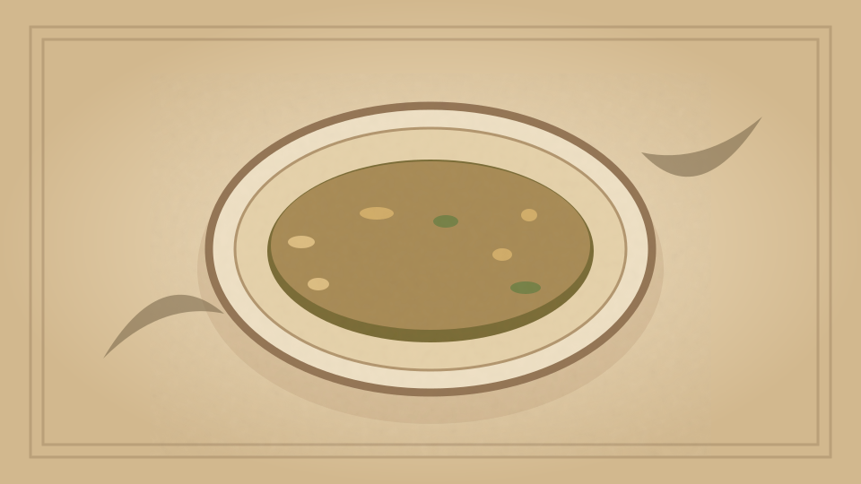

1910 · Fannie Merritt Farmer · SOUPS WITHOUT STOCK
Clam Chowder
The Boston Cooking-School Cook Book

Historical Recipe
The following text is extracted from the 1910 edition, retaining historical terminology and quantities.
Original Ingredients & Directions
1 quart clams
4 cups potatoes cut in ¾-inch cubes
1½ inch cube fat salt pork
1 sliced onion
1 tablespoon salt
⅛ teaspoon pepper
4 tablespoons butter
4 cups scalded milk
8 common crackers
Clean and pick over clams, using one cup cold water, drain, reserve liquor, heat to boiling-point, and strain. Chop finely hard part of clams; cut pork in small pieces and try out; add onion, fry five minutes, and strain into a stewpan. Parboil potatoes five minutes in boiling water to cover; drain, and put a layer in bottom of stewpan, add chopped clams, sprinkle with salt and pepper, and dredge generously with flour; add remaining potatoes, again sprinkle with salt and pepper, dredge with flour, and add two and one-half cups boiling water. Cook ten minutes, add milk, soft part of clams, and butter; boil three minutes, and add crackers split and soaked in enough cold milk to moisten. Reheat clam water to boiling-point, and thicken with one tablespoon butter and flour cooked together. Add to chowder just before serving.
The clam water has a tendency to cause the milk to separate, hence is added at the last.
Automatically extracted transcription; editorial verification pending. Historical instructions may not meet modern food-safety standards.